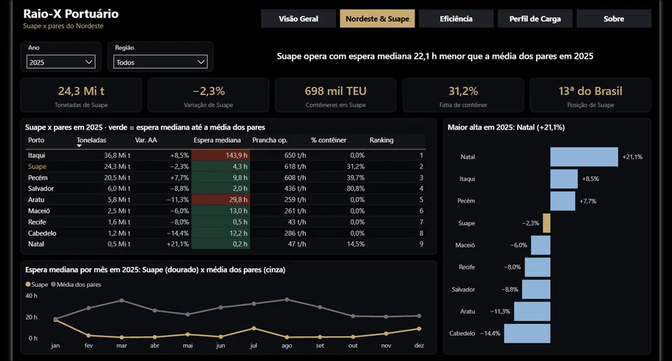

+3,1 pp
Supply chain · Diseño de experimentos
Un test A/B de dos políticas de reposición
600 SKUs, un guardrail definido antes, CUPED y un control A/A. Fill rate más alto, capital más bajo, y una clase de ítems que todavía no cambiaría.

Puertos · Power BI
Los puertos de Brasil batieron un récord. Suape creció en valor, no en peso.
1.403,8 millones de toneladas en 2025, y por qué los buques esperan 4,3 horas en Suape mientras el promedio de sus vecinos es de 26.

Compras públicas de salud · Python
Cuánto paga el sector público brasileño por implantes
Mismo código de catálogo, precios 13 veces distintos. Marcapasos 100% de fabricante extranjero. Y una tabla de reembolso que perdió un 47% en términos reales.